Carbon Dashboard v3 Theme
โครงการปลูกป่าชายเลน
เพื่อประโยชน์จากคาร์บอนเครดิต
หน้าเว็บนำเสนอ BLU Green Token ในรูปแบบ dashboard สีน้ำเงิน-เขียว เน้นความโปร่งใส กระบวนการติดตามด้วย AI / GIS / Drone และหลักฐานโครงการที่อ่านง่ายสำหรับผู้ลงทุน
Tokenized Carbon Credit
T-VER Pathway
AI Satellite Monitoring
Portfolio Snapshot
ภาพรวมโครงการแบบ Dashboard
ย่อยข้อมูลจาก deck ให้เป็น layer เว็บ: summary สำหรับ public, dashboard สำหรับนักลงทุน และ evidence package สำหรับ verifier
ข้อมูลเปิดเผยหลัก
พื้นที่ จังหวัด สถานะ T-VER กระบวนการปลูก และภาพความก้าวหน้าระดับ summary
Investor-ready layer
dashboard รายไตรมาส, carbon forecast, canopy coverage, survival trend และชุดภาพ before/after ที่ผ่านการคัดกรอง
Verifier package
เอกสาร T-VER, monitoring report, evidence trail และข้อมูลประกอบการตรวจประเมิน
Project Status
สถานะพื้นที่และภาพรวมการดำเนินงาน
ใช้ visual จาก PDF เป็น dashboard cards เพื่อคุม tone เดียวกับ deck และ repo
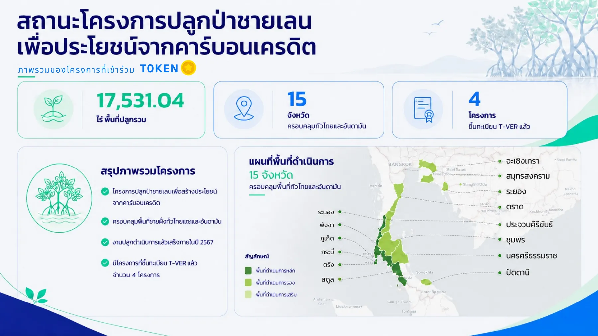
Portfolio map
15 จังหวัด / 4 โครงการ T-VER
สรุปพื้นที่ปลูกและจังหวัดที่ครอบคลุมชายฝั่งไทยและอันดามัน
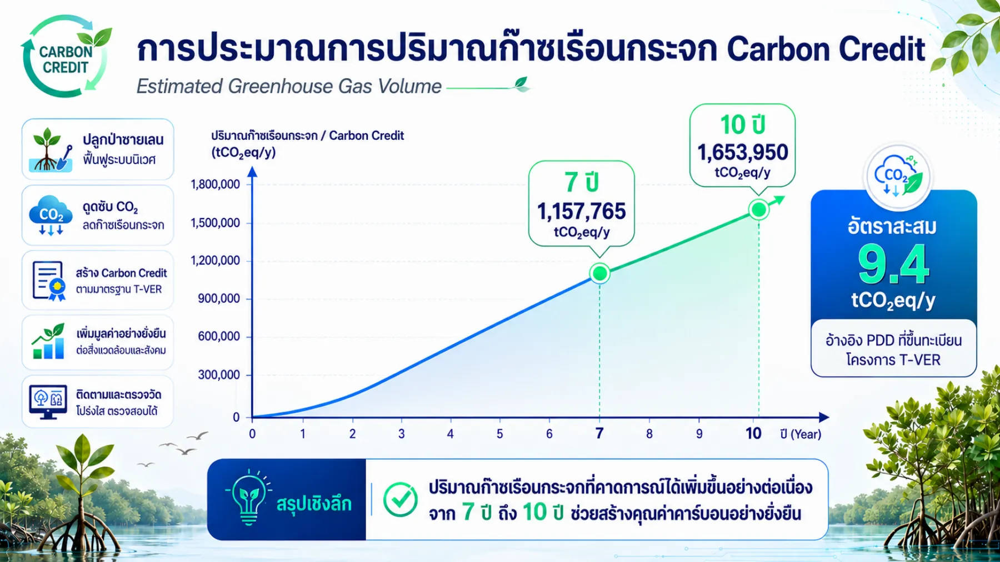
Carbon forecast
Projection view
แปลง chart ใน deck ให้เป็นมุมมอง forecast สำหรับ investor dashboard
Mangrove Planting Process
ขั้นตอนการปลูกป่าชายเลน
เล่ากระบวนการจากการขึ้นทะเบียนและฟังเสียงชุมชน ไปถึงปลูกซ่อม รับรอง T-VER และดูแลต่อเนื่อง 30 ปี
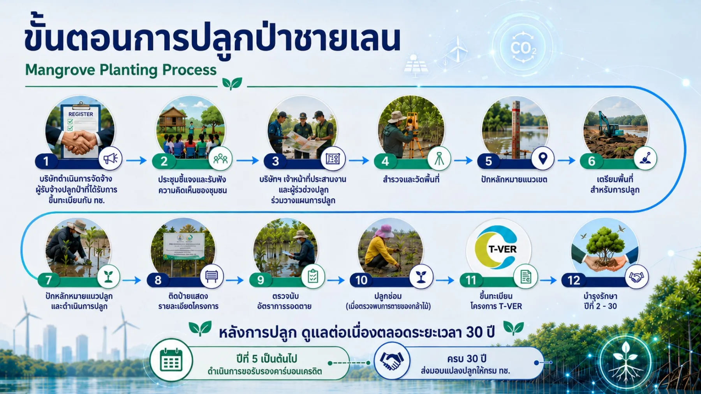
Register & Community
จัดจ้าง ขึ้นทะเบียน และรับฟังความคิดเห็นของชุมชนในพื้นที่
Survey & Boundary
สำรวจ รังวัด ปักหลักหมายแนวเขต และเตรียมพื้นที่ปลูก
Plant & Inspect
ดำเนินการปลูก ตรวจนับอัตรารอดตาย และปลูกซ่อมเมื่อพบความเสียหาย
T-VER & Maintenance
ขึ้นทะเบียน รับรองคาร์บอนเครดิต และบำรุงรักษาในระยะยาว
Technology-enabled Monitoring
ระบบติดตามด้วย AI, GIS, Drone และภาคสนาม
จัดหน้าแบบ console: เลือก layer ที่ต้องการดูและเปิดภาพประกอบจาก PDF ได้ทันที
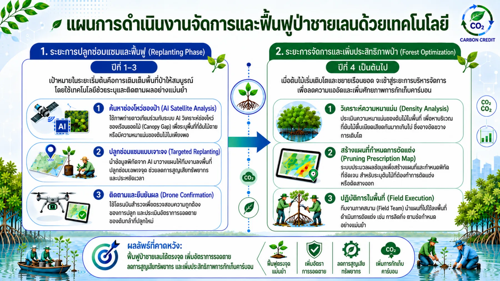
Replanting + Forest Optimization
ค้นหาช่องโหว่ของป่า ปลูกซ่อมแบบเจาะจง ยืนยันด้วยโดรน และวิเคราะห์ความหนาแน่นเพื่อกำหนด pruning prescription map
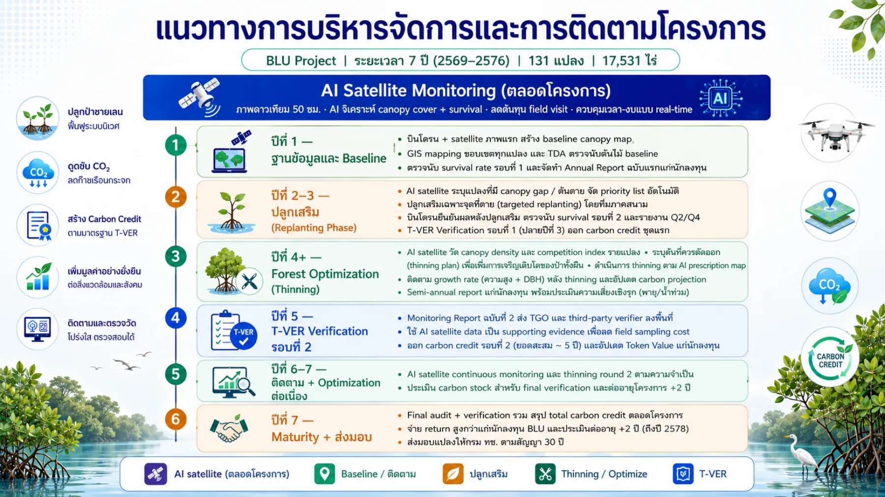
AI Satellite Monitoring ตลอดโครงการ
สร้าง baseline ปีแรก, targeted replanting ในปี 2–3, thinning / optimization ตั้งแต่ปี 4 และ verification รอบสำคัญในปี 5
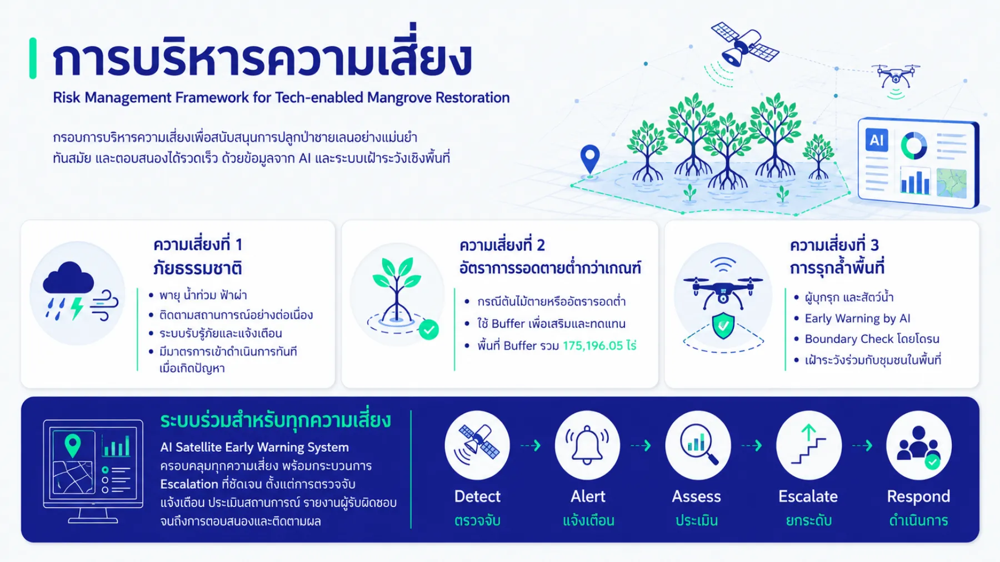
Detect → Alert → Assess → Escalate → Respond
ใช้ AI Satellite Early Warning System เพื่อติดตามภัยธรรมชาติ อัตรารอดตายต่ำกว่าเกณฑ์ และการบุกรุกพื้นที่
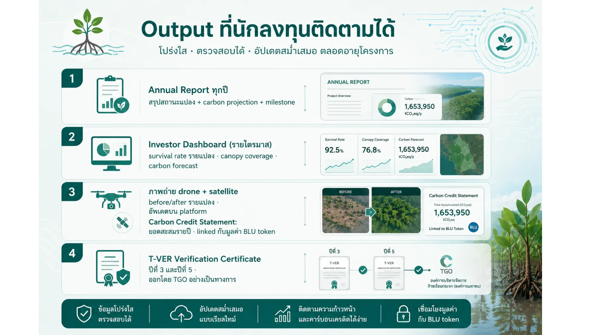
Annual Report / Dashboard / Evidence / Certificate
กำหนด output ที่นักลงทุนติดตามได้เป็นรอบ ตั้งแต่รายงานรายปี dashboard รายไตรมาส ไปจนถึง T-VER certificate
7-year Operating Roadmap
Roadmap การบริหารโครงการ BLU
Baseline
บินโดรนและภาพดาวเทียมครั้งแรก สร้าง canopy map, GIS boundary และรายงานตั้งต้น
Replanting Phase
AI ระบุ canopy gap / ต้นตาย แล้วจัดลำดับความสำคัญสำหรับปลูกเสริมแบบ targeted
Forest Optimization
วิเคราะห์ canopy density และ competition index เพื่อกำหนด thinning / pruning map
T-VER Verification
จัด monitoring report รอบที่ 2 ส่ง TGO และ third-party verifier พร้อมหลักฐาน data layer
Continuous Monitoring
ติดตาม satellite ต่อเนื่อง ประเมิน carbon stock และความเสี่ยงเชิงรุก
Maturity + ส่งมอบ
สรุป total carbon credit ตลอดโครงการ และส่งมอบแปลงปลูกตามสัญญาระยะยาว
Risk Response
บริหารความเสี่ยงให้เป็นระบบ
เว็บจัด risk framework ให้เห็น workflow ชัดเจน: ตรวจจับ แจ้งเตือน ประสานงาน ดำเนินการ และบันทึกรายงาน
- พายุ / น้ำท่วม: ตรวจล่วงหน้าและวาง replanting plan
- ต้นไม้ตายสะสม: buffer pool และชดเชย carbon credit ที่หายไป
- ผู้บุกรุก: boundary alert และบันทึกหลักฐานอย่างเป็นระบบ
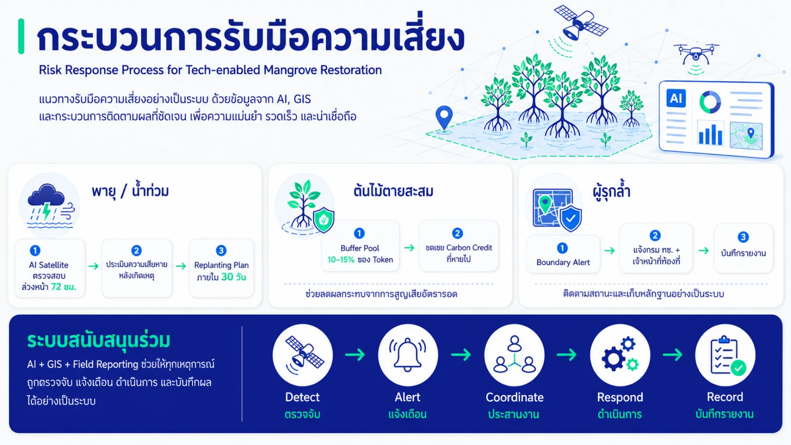
Evidence Gallery
ภาพหลักฐานจาก PDF ที่เอามาทำเป็นเว็บ
ภาพถูกนำมาใช้เป็น card แบบ dashboard: ดูเร็ว เปิดขยายได้ และต่อยอดเป็น data room ได้
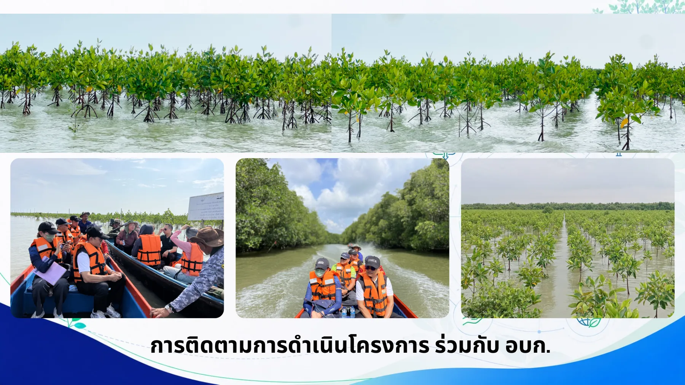
Field monitoring
การติดตามการดำเนินโครงการร่วมกับ อบก.
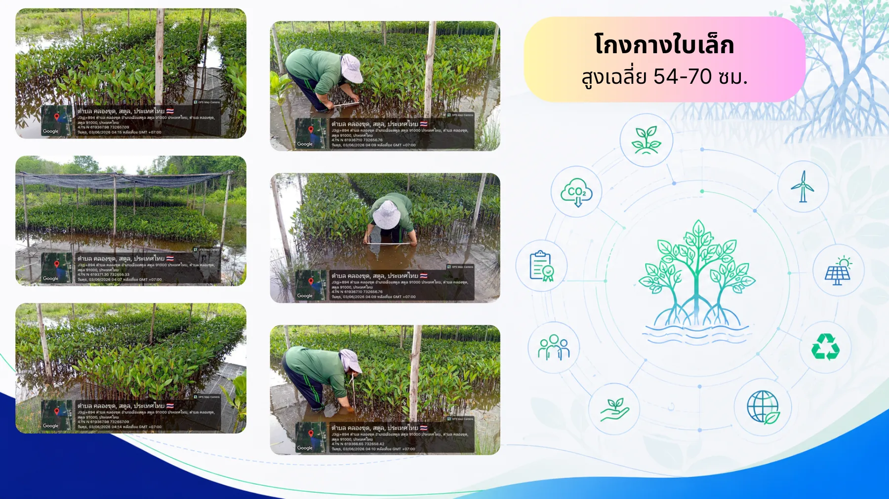
Seedling evidence
โกงกางใบเล็ก 54–70 ซม.
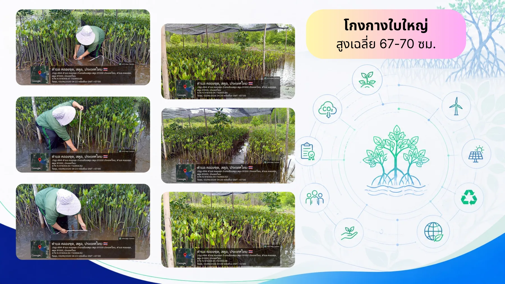
Seedling evidence
โกงกางใบใหญ่ 67–70 ซม.
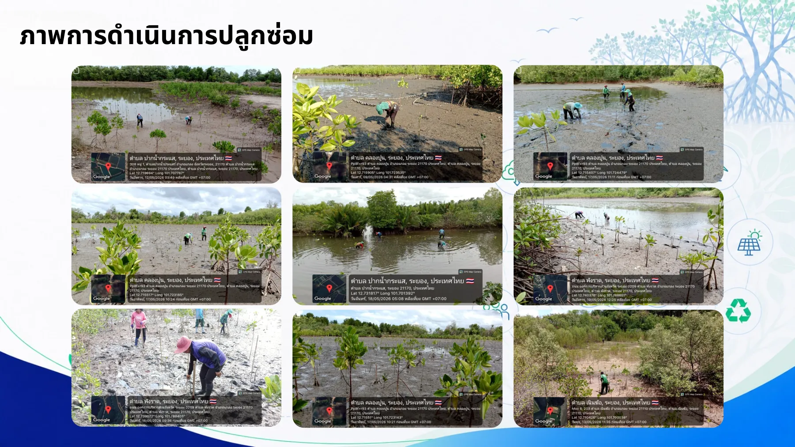
Replanting proof
ภาพการดำเนินการปลูกซ่อม
Investor Outputs
Output ที่ควรมีในเว็บจริง
Annual Report
สถานะแปลง carbon projection และ milestone รายปี
Quarterly Dashboard
survival rate รายแปลง canopy coverage และ carbon forecast
Drone + Satellite
before/after และ evidence trail ที่เปิดเผยตามสิทธิ์
T-VER Certificate
certificate รอบปีที่ 3 และปีที่ 5 ออกโดย TGO
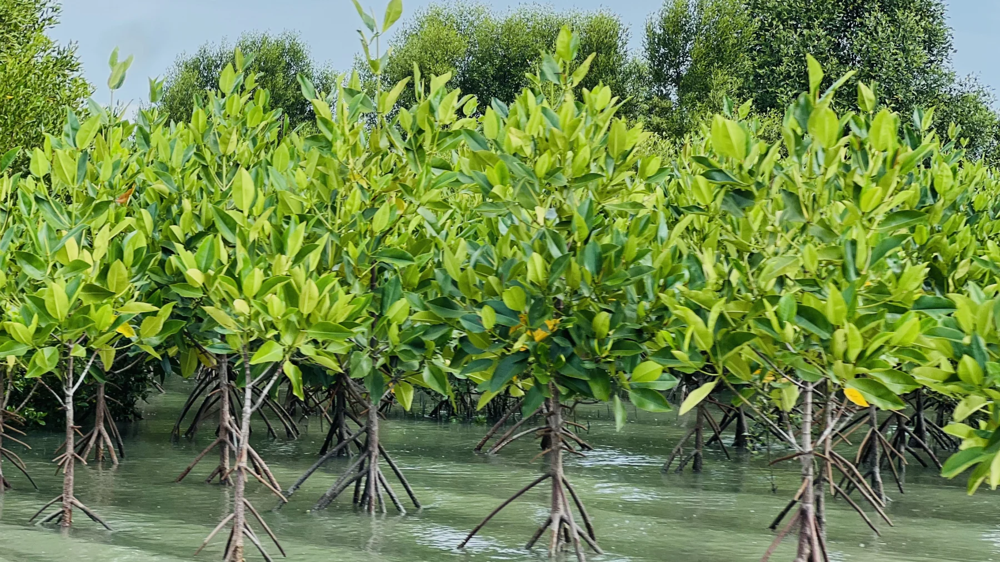
Ready to deploy
โครงเว็บพร้อมนำไปต่อเป็น React/Vite หรือ deploy แบบ static
ไฟล์นี้ไม่มี build step ภายนอก เปิด index.html ได้ทันที และแยก asset จาก PDF ไว้ครบในโฟลเดอร์ assets/slides
กลับด้านบน